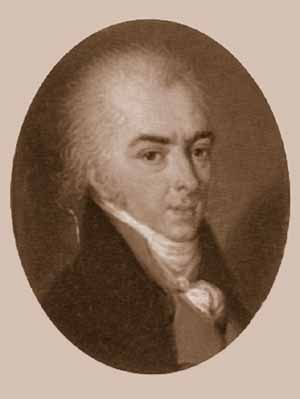

Николай Никитич Поповский (ок. 1730 — 13 февраля 1760) — профессор красноречия и магистр философии[3], воспитанник Славяно-Греко-Латинской Академии[4] и Академического университета, ученик М. В. Ломоносова, который высоко ценил его первые литературные опыты и рекомендовал его Ивану Ивановичу Шувалову. Был сыном священника церкви Василия Блаженного в Москве. Первоначальное образование получил в Славяно-Греко-Латинской академии, а затем — в числе других лучших учеников, был переведён в Академический университет. В 1753 году Поповский по настоянию М. В. Ломоносова был назначен конректором[5] Академической гимназии, а в 1755 году назначен в Московский университет для чтения «философских лекций», которые открыл речью: «О пользе и важности теоретической философии». С мая 1756 года он состоял в университете профессором красноречия. Смотря на философию, как на «изображение храма вселенной», и признавая за ней «нравственное значение преимущественно действовать на людей отпавших от Бога», он нападал на господство в философии латинского языка и настаивал на необходимости преподавать её на русском языке. Читая впоследствии и лекции по «элоквенции» (т. е. словесности), Поповский много писал в стихах и прозе, отличаясь, для своего времени, силой и плавностью языка. Важной и отличительной характеристикой философствования Поповского являлась попытка «сращения» философских понятий, усвоенных им в Славяно-Греко-Латинской академии, с западноевропейскими естественно-научными представлениями[4]. Его «Письмо о пользе наук и о воспитании в оных юношества, писанное к И. И. Шувалову» (1756), доказывающее необходимость научного образования — одно из замечательнейших дидактических произведений Ломоносовского периода. Другие сочинения Поповского: «Ода на восшествие на престол Елизаветы Петровны» (1754) и «Похвальное слово Елизавете Петровне» (1756). Из переводов его особенно ценился современниками сделанный с французского языка перевод, в стихах, «Опыта о человеке» Александра Поупа (до 1802 г. — четыре издания). Много перевел Поповский од и сатир Горация, печатая свои переводы в «Полезном Увеселении» Хераскова; вместе с его же переводом Горациева послания к Пизонам: «De arte poetica», они вышли отдельной книгой в 1801 году. Поповский первый стал издавать «Московские Ведомости» и заведовал их редакцией. В 1802 году Карамзин написал: «Если бы он пожил долее, то Россия, конечно, могла бы гордиться его изящными произведениями».[6]